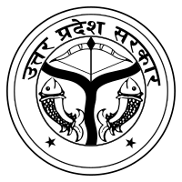
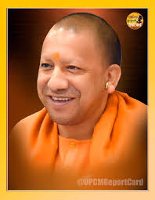
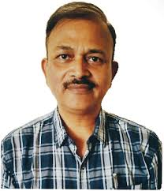

MAHAMAYA POLYTECHNIC INFORMATION
TECHNOLOGY KUSHINAGAR
APPROVED ALITE NEW DELHI AND AFFILITED DTE LUCKNOW

- 

- 
Mahamaya Polytechnic of Information
Technology, Kushinagar
Mahamaya Polytechnic of Information Technology, Mansa chapar, Kushinagar (MMIT) situated on Kushinagar district. It is 8 km away from Padraunasadar and Padrauna Railway Station. It is a premier institute of the city. Established in around 5 acres of land this institute offers a number of courses for aspiring students. The institute not only has proved a destination of excellence for the students but also for the industry people looking for excellent and well trained employees. The institute is seen as centre of educational excellence in whole of the Kushinagar region not just for the education it imparts but also for the qualities it develops. The Institute has three departments namely the Mechanical Engineering (Automobile), Electrical and Electronics Engineering, Computer science and Engineering. This institute in every aspect fulfills the expectations of each and everyone who joins the institute. All the three engineering departments and all the programs that are run in the institute are handled by our best faculties who are not only known for their excellent teaching skills but also for the passion they have for their subjects. So under this dedicated team and under adequate infrastructure it is a place for those who really want to make their career bloom.
I Welcome you all to Mahamaya Polytechnic of Information Technology, Kushinagar, one of the most prestigious and premier polytechnic college in Uttar Pradesh.
Education is the most powerful tool, capable of bringing the positive aptitude in the individual. In this competitive global scenario it is necessary to prepare the students to meet new challenges to enhance their career. The noble idea of our institution is to identify raw talents among the students and shape them into champions with imperishable knowledge to face the global challenges. Vision, Planning, Strategy and execution all play a vital role in an institutions growth and Mahamaya Polytechnic of Information Technology, Kushinagar is committed in new ventures to establish Mahamaya Polytechnic of Information Technology, Kushinagar as the best institution in offering quality technical evolution.
Mr.P C Gupta
Principal of mmit kushinagar